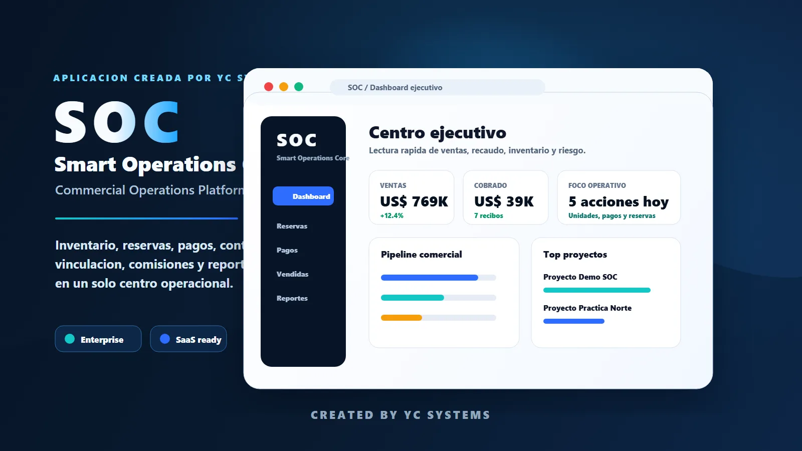
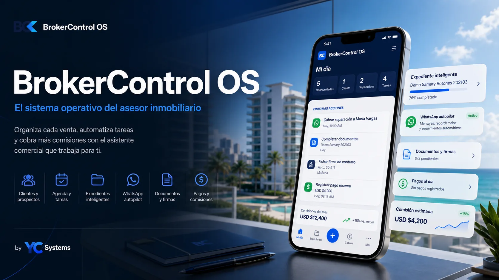
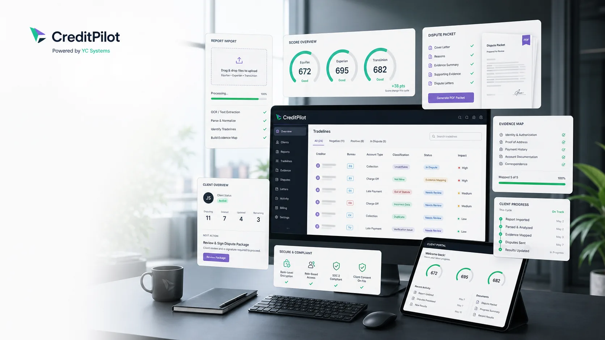

CleanLoop
Operación de lavandería en una sola plataformaPedidos, clientes, recogidas, entregas, rutas y pagos conectados en un flujo operativo claro.
CleanLoopProductos YC Systems
Plataformas enfocadas en problemas concretos, con una disponibilidad pública y verificable.
Pedidos, clientes, recogidas, entregas, rutas y pagos conectados en un flujo operativo claro.
CleanLoop
Pipeline, actividad, indicadores y seguimiento ejecutivo reunidos en un centro operativo.
SOC
Prospectos, propiedades, reservas, documentos, agenda y comisiones dentro de un mismo flujo.
BrokerControl
Una línea de producto en desarrollo para casos, documentos, cartas y seguimiento de clientes.
En desarrolloDisponibilidad
Cada etiqueta describe lo que una empresa puede esperar hoy, sin presentar conceptos futuros como funciones disponibles.
Siguiente paso
Cuéntanos qué proceso necesitas controlar, medir o automatizar y recibe una recomendación inicial de alcance y prioridades.